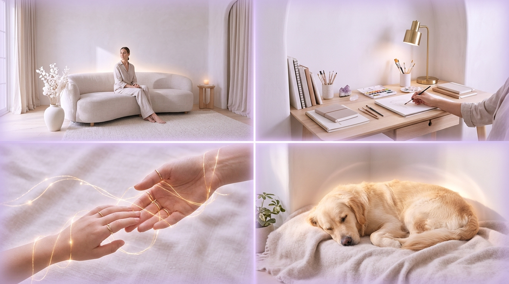
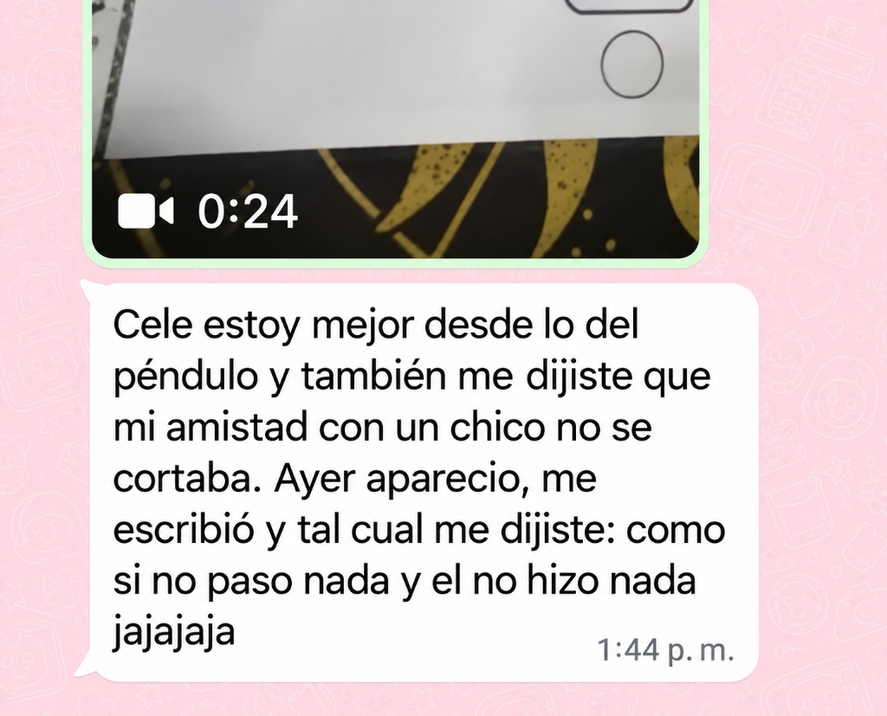
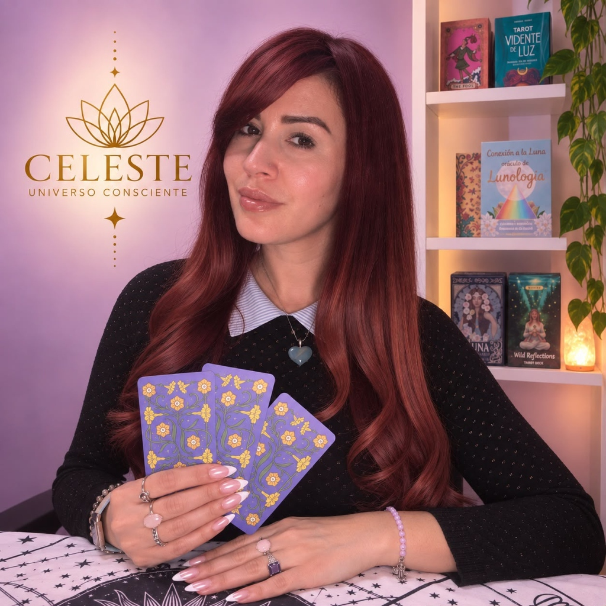
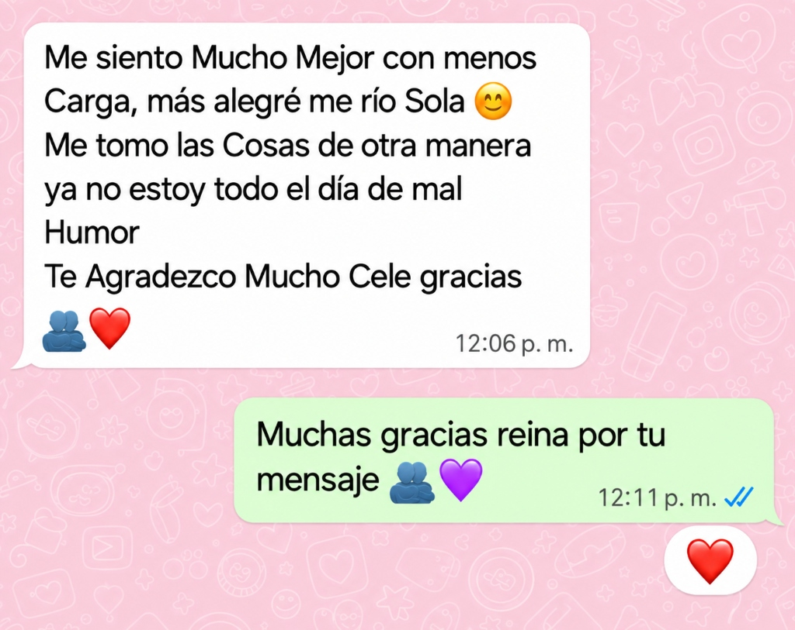
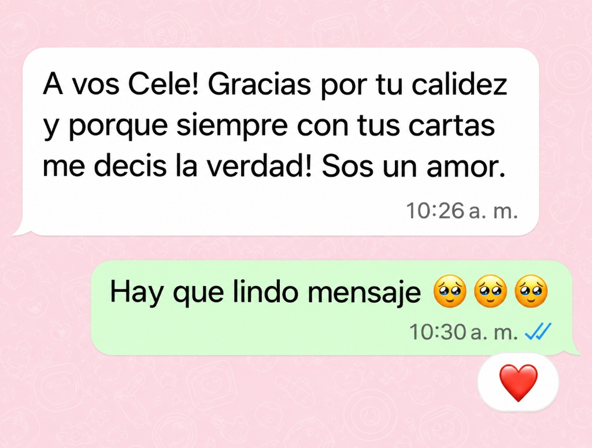

¿En qué consiste la limpieza energética integral?
Es un trabajo energético personalizado que busca limpiar y armonizar tu energía, liberar las cargas acumuladas y favorecer una sensación de renovación, equilibrio y bienestar espiritual.
Limpieza Energética
Se trabaja sobre el desgaste y las energías densas acumuladas que pueden estar generando pesadez o cansancio en tu día a día.
Armonización Interior
Orientada a irradiar paz, serenidad, vitalidad, confianza y claridad interior para volver a sentirte en equilibrio.
Protección y Apertura
Incluye el sellado y resguardo de tu energía para preservar la armonía alcanzada, acompañando la apertura de tus caminos.
¿Qué beneficios se buscan con esta sesión?
Este trabajo está orientado a acompañar tu bienestar espiritual y favorecer una experiencia de alivio y renovación personal.
Liviandad y Renovación
Favorece una sensación de alivio y renovación energética para dejar atrás la pesadez acumulada y recuperar tu vitalidad.
Paz y Armonía Interior
Acompaña la búsqueda de serenidad y tranquilidad, ayudando a suavizar las tensiones e inquietudes de todos los días.
Claridad y Bienestar
Ayuda a despejar la mente, ordenar tus pensamientos y conectar con lo que realmente necesitás en tu presente.
Apertura de Caminos
Acompaña el cierre de etapas desgastantes y favorece la apertura de nuevas oportunidades en tu camino personal.
Tocá las flechas o la tarjeta para recorrer cada paso
¿Te sentís identificado con alguna de estas situaciones?
A veces atravesamos etapas de mucho desgaste o cambios que nos dejan movilizados, sintiendo que nos cuesta encontrar tranquilidad o que necesitamos una pausa para recuperar nuestro equilibrio.
Este espacio está pensado para acompañarte con respeto y calidez a recuperar tu centro, tu tranquilidad y tu bienestar.
Pesadez y cansancio
Sentís agotamiento constante, falta de vitalidad o la necesidad de descansar sin lograr recuperarte del todo.
Inquietud y desgaste emocional
Experimentás sensibilidad, cambios de ánimo o dificultad para encontrar calma y serenidad en tu rutina.
Desarmonía en tus espacios
Percibís tensión o incomodidad en tu hogar o en aquellos ambientes donde pasás mucho tiempo cada día.
Sensación de estancamiento
Te cuesta ordenar tus pensamientos o sentís que tus proyectos y planes no avanzan como esperabas.
¿Cómo se realiza la sesión paso a paso?
La limpieza se realiza 100% a distancia, por lo que no necesitás trasladarte ni permanecer conectada durante la sesión. El trabajo se adapta a las necesidades de cada persona.
100% a Distancia
No necesitás trasladarte ni interrumpir tus actividades. Podés continuar con tu día con total tranquilidad.
Durante el Proceso
Mantenemos comunicación mediante fotografías, videos y actualizaciones para que conozcas el desarrollo de tu sesión.
Informe en PDF
Al finalizar, recibís un informe personalizado en formato PDF con la devolución completa del trabajo realizado.
Acompañamiento
Seguimos en contacto después de la sesión para brindarte recomendaciones simples y acompañarte en tu proceso.
Apertura de caminos en distintos ámbitos
Se incorpora un trabajo energético orientado a acompañar procesos de renovación y armonía en las distintas áreas de tu vida, según tus necesidades.

Casa y Espacios
Limpieza de desarmonías, tensión o pesadez en tu hogar o ambientes cotidianos para recuperar la serenidad.
Trabajo y Proyectos
Acompañamiento en tus proyectos, actividades laborales y económicas, destrabando la sensación de estancamiento.
Vínculos y Relaciones
Armonización en tus relaciones personales, afectivas y familiares, ayudando a suavizar tensiones y recuperar la calma.
Mascotas y Animales
Alivio energético y cuidado para tus animales de compañía, quienes también perciben las tensiones del entorno.
Experiencias reales de consultantes
Capturas directas de WhatsApp compartidas luego de recibir su sesión y su devolución energética.




Valor de tu Limpieza Energética Integral
Trabajo energético personalizado 100% a distancia, adaptado a tus necesidades, con fotografías, videos, informe en PDF y acompañamiento.
Tarifa Nacional
Tarifa Internacional
¿Qué incluye tu sesión completa?
Un trabajo pensado para vos
Cada persona llega con una historia, una situación y necesidades diferentes. Mi propuesta es ofrecerte un espacio de trabajo energético personalizado, dedicado especialmente a acompañarte en lo que necesitás hoy.
Atención dedicada 1 a 1 · Cupos limitados por semana para asegurar máxima atención